Lors d’un cours, le danois Hans Christian Œrsted découvre qu’un fil conducteur parcouru par
un courant électrique fait dévier l’aiguille d’une boussole placée a proximité.
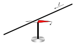
Expérience dŒrsted.
Cette expérience prouve sans ambiguïté le lien entre courant électrique et champ magnétique.
Par ailleurs, si on inverse le sens du courant, l’aiguille tourne de 180°. L’expérience
d’Œrsted suscite un grand intérêt car c’est la première fois qu’on met en évidence une force
qui n’est pas suivant la ligne joignant les deux corps en interaction.
1820 : les travaux d’Ampère et d’Arago
C’est François Arago qui, après avoir assisté à une démonstration de l’expérience d’Œrsted à
Genève, la présente à l’Académie des sciences de Paris. Dans l’assemblée, Ampère est
enthousiaste et se lance dans un travail expérimentale et théorique. Ampère montre notamment
que deux fils rectilignes parcourus par un courant s’attirent ou se repoussent selon que les
courants sont dans le même sens ou pas. Il montre également qu’une spire parcourue par un
courant se comporte comme un aimant. On peut associer à une spire un pôle nord et un pôle
sud. Si l’on change le sens du courant, la polarité change.
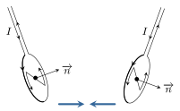
Expériences d’Ampère.
Par ailleurs, Arago qui collabore avec Ampère découvre que le courant électrique a la
propriété d’aimanter le fer ce qui mènera à l’invention de l’électroaimant.
1876 : expérience de Rowland
Henry Rowland démontre, à l’aide d’un travail expérimental très soigné, qu’un disque chargé
électriquement en rotation rapide produit un champ magnétique. Autrement dit, les charges
électriques en déplacement produisent les mêmes effets magnétiques qu’un courant électrique
ce qui suggère que le courant électrique est lié à un déplacement de charges électriques.
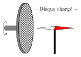
Expérience de Rowland.
Conclusion
Tout mouvement de charges, et notamment le courant électrique, est source de champ
magnétique.
Énoncé
L’étude quantitative des interactions entre aimants et courants fut réalisée par les
physiciens Biot et Savart (1820). Ils mesurèrent la durée des oscillations d’une aiguille
aimantée en fonction de sa distance à un courant rectiligne. Ils trouvèrent que la force
agissant sur un pôle est dirigée perpendiculairement à la direction reliant ce pôle au
conducteur et qu’elle varie en raison inverse de la distance. De ces expériences, Laplace
déduisit ce qu’on appelle aujourd’hui la loi de Biot et Savart.
Le champ magnétique que produit une distribution filiforme de courant peut s’obtenir en
décomposant la distribution en petits éléments de courant. On considère que chaque élément
de courant de longueur orientée \(c\) traversé par un courant
d’intensité \(I\) produit un champ magnétique élémentaire en \(M\) :
$$
\quad \overrightarrow{\mathrm{d}B}(M)
= K \frac{ I \overrightarrow{\mathrm{d}\ell} \wedge \overrightarrow{u} }{r^2}
$$
où :
\(K\) est une constante
\(\overrightarrow{u}\) le vecteur unitaire joignant l’élément de courant à \(M\)
\(r\) la distance entre \(M\) et la portion de circuit
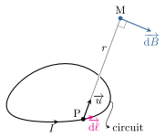
Notations utilisées dans la loi de Biot et Savart.
Il faut voir \(\overrightarrow{\mathrm{d}B}\) comme un intermédiaire de calcul, seule la
somme de toutes les contributions a un sens physique. Le champ magnétique résultant
s’obtient donc en intégrant l’expression précédente, le point \(P\) parcourant tout le
circuit :
$$
\quad \overrightarrow{B}(M) = \oint \overrightarrow{\mathrm{d}B}
= K \oint_{circuit}
\frac{ I \overrightarrow{\mathrm{d}\ell} \wedge \overrightarrow{u} }{r^2}
$$
Dans le Système international d’unités, on pose
$$
\quad K = \frac{\mu_0}{4\pi} \simeq 1.10^{-7}\,\rm{SI}
$$
\(\mu_0\) est appelé perméabilité magnétique du vide.
Ainsi, un circuit filiforme alimenté par un courant stationnaire d’intensité \(I\) produit
un champ magnétique en \(M\) donné par :
$$
\quad \boxed{ \overrightarrow{B}(M)
= \frac{\mu_0}{4\pi} \oint_{\mathcal{C}}
\frac{ I \overrightarrow{\mathrm{d}\ell} \wedge \overrightarrow{u} }{r^2}
= \frac{\mu_0}{4\pi} \oint_{\mathcal{C}}
\frac{ I \overrightarrow{\mathrm{d}\ell} \wedge \overrightarrow{PM} }{PM^3} }
$$
La loi de Biot et Savart permet de calculer le champ magnétique créé par une distribution de
courant stationnaire filiforme. Cela conduit au calcul de trois intégrales scalaires voire
moins lorsque le problème présente suffisamment de symétries.
Il peut arriver que le calcul analytique s’avère ardu, il faut alors envisager une approche
numérique.
Exemple de calcul : le fil rectiligne infini
Considérons un fil infini d’axe \(Oz\) parcouru par un courant constant d’intensité \(I\) et
cherchons le champ magnétique produit à la distance \(r\) du fil. À l’aide de la formule de
Biot et Savart, on peut exprimer le champ magnétique \(\mathrm{d}B\) produit par la portion
de longueur \(\mathrm{d}\ell\) :
$$
\quad \mathrm{d}B = \frac{\mu_0}{4\pi} \frac{ I \mathrm{d}\ell \cos(\varphi) }{PM^2}
$$
avec \(\varphi\) l’angle que fait la droite (MP) avec le plan médiateur passant par \(M\).
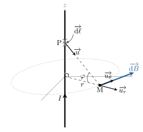
Champ magnétique créé par un fil rectiligne infini.
Choisissons la variable \(\varphi\) comme variable d’intégration.
Sachant que \(PM = r/\cos(\varphi)\) et \(\ell = r\tan(\varphi)\) d’où l’on tire
\(\mathrm{d}\ell = r \frac{\mathrm{d}\varphi}{\cos^2(\varphi}\), on obtient :
$$
\quad \mathrm{d}B = \frac{\mu_0}{4\pi} \frac{ I \cos(\varphi) }{r} \mathrm{d}\varphi
$$
Vu que tous les champs élémentaires sont colinéaires et dirigés suivant le vecteur
orthoradial \(\overrightarrow{u_{\theta}}\), on peut ajouter les intensités des champ pour
avoir le champ magnétique total
$$
\quad B(M) = \frac{\mu_0I}{4\pi r}
\int_{\varphi=-\pi/2}^{\varphi=\pi/2} \cos(\varphi)\mathrm{d}\varphi
= \frac{\mu_0I}{2\pi r}
$$
Finalement, il règne dans l’espace un champ magnétique :
$$
\quad \overrightarrow{B}(M) = \frac{\mu_0I}{2\pi r} \overrightarrow{u_{\theta}}
$$
Topographie et symétries
Décrivons différentes situations afin de dégager les propriétés essentielles du champ
magnétique.
Le fil infini
Le champ magnétique créé par un long fil rectiligne est orthoradial. Par conséquent, les
lignes de champ sont des cercles. Contrairement au champ électrique, les lignes de champ
magnétique se referment sur elle même. On peut noter que le champmagnétique tourne autour
du fil dans un sens imposé par la règle du tire-bouchon : un tire-bouchon tournant
dans le sens du champ magnétique progresse dans le sens du courant.
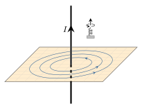
Champ magnétique créé par un fil rectiligne infini.
La spire circulaire
Les lignes de champ sont dans des plans perpendiculaires à la spire et contenant son centre.
On peut noter, là encore, la structure fermée de ces lignes. Comme on l’a déjà vu
précédemment, on peut associer à cette spire un moment magnétique qui indique la direction
sud-nord de l’aimant équivalent. Cela correspond également au sens du champ magnétique qui
règne au centre de la spire.
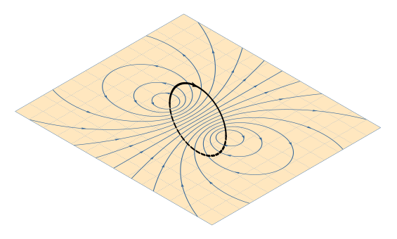
Champ magnétique créé par une spire.
Le solénoïde
Enroulons de façon jointive un fil conducteur sur un cylindre de longueur \(L\) : on
obtient une bobine ou solénoïde. Cet enroulement est caractérisé par une densité linéique
d’enroulement \(n=N/L\), avec \(N\) le nombre d’enroulements. Bien que cet enroulement soit
légèrement hélicoïdal, on peut, dans une première approximation, assimiler le solénoïde à
une superposition de spires très rapprochées. Dans ce cas, les lignes de champ sont des
courbes planes situées dans un plan coupant en deux le solénoïde dans le sens de la
longueur. La figure ci-dessous montre l’allure des lignes de champ. À l’intérieur de la
bobine, les lignes sont quasiment parallèles ce qui traduit le caractère quasi-uniforme du
champ. On montre que lorsque \(L \to \infty\), le champ magnétique à l’intérieur est axial,
uniforme et ne dépend que de l’intensité électrique et de la densité d’enroulement :
\(B_{int} = \mu_0 n I\).
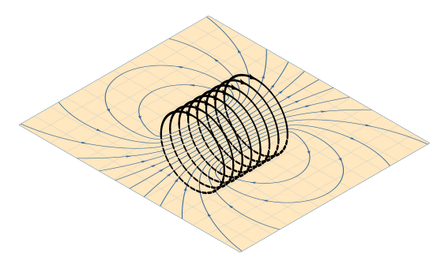
Champ magnétique créé par un solénoïde.
Pour un enroulement de spires, un tire-bouchon que l’on fait tourner dans le sens du courant
électrique progresse dans le sens du champ magnétique au centre et correspond au sens
sud-nord de l’aimant équivalent.
Symétries
Le champ magnétique ne présente pas les mêmes propriétés de symétrie que le champ
électrique. En effet, la formule de Biot et Savart montre que le champ magnétique se
transforme comme un produit vectoriel. On dit que le champ magnétique est un vecteur axial
ou pseudovecteur.
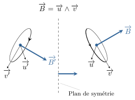
Transformation d’un vecteur axial par un plan de symétrie.
En présence d’un plan de symétrie, un vecteur normal (ou vecteur polaire) se transforme
comme dans un miroir. En conséquence, le produit vectoriel de deux vecteurs normaux ne se
transforme pas comme dans un miroir. Sur la figure ci-dessus, on voit que
\(\overrightarrow{B}\) se transforme ainsi :
$$
\quad M \overset{symétrie}{\longrightarrow} M'\quad,\quad
\overrightarrow{B}(M)\overset{symétrie}{\longrightarrow}-\mathrm{sym}\overrightarrow{B}(M)
$$
En vertu du principe de Curie, si la distribution de courant est invariante par symétrie,
l’opération de la symétrie ne doit pas changer la valeur du champ magnétique. Par conséquent
$$
\quad \boxed{ \overrightarrow{B}(M') = -\mathrm{sym}\overrightarrow{B}(M) }
$$
Cette propriété implique que pour tout point \(M\) situé dans un plan de symétrie, le
champ magnétique est obligatoirement perpendiculaire au plan de symétrie.
On dit que la distribution présente un plan d’anti-symétrie \(\mathcal{P}'\) lorsque la
distribution de courant est invariante par l’opération de symétrie de plan \(\mathcal{P}'\)
suivi de l’inversion du sens des courants. Dans ce cas, en un point M de l’espace, le champ
magnétique ne doit pas varier lorsque l’on effectue cette transformation (principe de
Curie). Détaillons la transformation
$$
\quad \begin{align}
M & \overset{symétrie}{\longrightarrow} \quad M'
&& \overset{inversion}{\longrightarrow} M' \\
\overrightarrow{B}(M) & \overset{symétrie}{\longrightarrow}
-\mathrm{sym}\overrightarrow{B}(M) && \overset{inversion}{\longrightarrow}
\mathrm{sym}\overrightarrow{B}(M)
\end{align}
$$
On en déduit que
$$
\quad \boxed{ \overrightarrow{B}(M') = \mathrm{sym}\overrightarrow{B}(M) }
$$
Cette propriété implique que pour tout point \(M\) situé dans un plan d’anti-symétrie, le
champ magnétique est obligatoirement contenu dans ce plan.
Exemple :
Identifions les plans de symétrie et d’anti-symétrie d’un solénoïde cylindrique (considéré
comme un ensemble de spires parallèles).
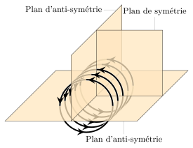
Plans de symétrie d’un solénoïde cylindrique.
Tout plan contenant l’axe du solénoïde est un plan d’anti-symétrie. Les lignes de champ
doivent donc appartenir à ces plans. En conséquence, l’axe du solénoïde est nécessairement
une ligne de champ. Par ailleurs, le plan perpendiculaire à l’axe du solénoïde et passant
par le milieu du solénoïde est un plan de symétrie. Les lignes de champ doivent traverser ce
plan à angle droit.
Champ créé par un dipôle magnétique
On cherche à déterminer l’expression du champ magnétique créé par un dipôle magnétique
c’est-à-dire une distribution localisée de courant auquel on peut associer un moment
magnétique \(\overrightarrow{m}\). Nous verrons que loin du dipôle magnétique la structure
du champ magnétique présente des analogies avec celui du champ électrique créé par un dipôle
électrique.
Champ magnétique créé le long de l’axe d’une spire
Commençons par étudier le champ magnétique produit par une spire circulaire de rayon \(R\)
parcouru par un courant permanent d’intensité \(I\). Dans le cas général, le calcul fait
appel aux intégrales elliptiques ; on se contente ici d’étudier l’évolution du champ
magnétique le long de l’axe \((Oz)\) de la spire.
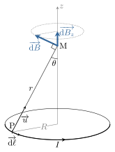
Calcul du champ magnétique produit sur l’axe d’une spire.
Tout d’abord, appelons \(\theta\) le demi-angle au sommet du cône formé par la spire et un
point \(M\) de l’axe. D’après la loi de Biot et Savart
$$
\quad \mathrm{d}\overrightarrow{B}(M)
=\frac{\mu_0I}{4\pi}\frac{\overrightarrow{\mathrm{d}\ell}\wedge\overrightarrow{u}}{r^2}
$$
le champ \(\mathrm{d}\overrightarrow{B}(M)\) fait un angle \(\pi/2 - \theta\) avec l’axe
\((Oz)\).
Par ailleurs, tout plan contenant l’axe de la spire est un plan d’anti-symétrie (il y en a
une infinité). Il en résulte que le champ magnétique est nécessairement le long de l’axe
pour les points M de cet axe. Il suffit dès lors de sommer toutes les composantes verticales
des champs élémentaires :
$$
\quad \mathrm{d}B_z
= \mathrm{d}\overrightarrow{B} \cos\left( \frac{\pi}{2} - \theta \right)
= \frac{\mu_0I}{4\pi} \frac{\mathrm{d}\ell \sin(\theta)}{r^2}
$$
Lorsque le point \(P\) décrit le circuit fermé, l’angle \(\theta\), la distance \(r\) et
l’intensité \(I\) restent constants :
$$
\quad B_z = \frac{\mu_0I\sin(\theta)}{4\pi r^2} \oint \mathrm{d}\ell
= \frac{\mu_0IR\sin(\theta)}{4\pi r^2}
$$
Finalement, compte tenu du fait que \(\sin(\theta) = R/r\), le champ magnétique créé par
une spire le long de son axe s’écrit
$$
\quad \overrightarrow{B}(M) = B_{max} \sin^3(\theta) \overrightarrow{u_z}
$$
avec \(B_{max} = \frac{\mu_0I}{2R}\) le champ créé au centre de la spire.
Approximation dipolaire
À partir du résultat précédent, regardons maintenant comment le champ magnétique varie loin
de la boucle de courant. Sachant que \(\sin(\theta) = R / \sqrt{R^2+z^2}\) on peut écrire
le résultat précédent en fonction de la variable \(z\) :
$$
\quad B(M \in Oz) = \frac{\mu_0IR^2}{2} \frac{1}{(R^2+z^2)^{3/2}}
$$
Faisons intervenir le moment dipolaire de la spire, \(m = \pi R^2 I\) :
$$
\quad B(M \in Oz) = \frac{\mu_0m}{2\pi} \frac{1}{(R^2+z^2)^{3/2}}
$$
Expression qui, loin de la spire, devient (\(R^2 + z^2 \simeq z^2\)) :
$$
\quad B(M \in Oz) = \frac{\mu_0}{4\pi} \frac{2m}{z^3} \quad / z \gg R
$$
Le champ magnétique décroît donc comme l’inverse du cube de la distance lorsque l’on se
situe loin de la spire. Cette formule n’est pas sans rappeler l’évolution du champ
électrique créé par un dipôle électrique le long de l’axe du dipôle. En effet, le champ créé
par un dipôle électrique le long de son axe vaut, dans l’approximation dipolaire
$$
\quad E_{dipolaire}(M \in Oz) = \frac{1}{4\pi\varepsilon_0} \frac{2p}{z^3}
$$
On peut montrer que cette analogie fonctionne dans l’approximation dipolaire, c’est-à-dire
dès que l’on se trouve loin du dipôle magnétique.
Le champ magnétique créé par un dipôle magnétique a la même structure que le champ
électrique créé par un dipôle dès lors que l’on se place dans l’approximation dipolaire.
On a
$$
\quad \boxed{ \overrightarrow{B}(M) =
\frac{\mu_0}{4\pi r^2}
\left(3\left(\overrightarrow{m}\cdot\overrightarrow{u_r}\right)\overrightarrow{u_r}
-\overrightarrow{m}\right) }
$$
Origines du magnétisme
Géomagnétisme
La Terre produit un champ magnétique de l’ordre de \(10\,\rm{\mu T}\). Ce champ est de nature
dipolaire et peut s’interpréter comme lié à l’existence d’un dipôle magnétique au centre de
la Terre de moment magnétique \(m \approx 10^{23}\,\rm{A.m^2}\) et dont l’axe est quasi
aligné avec l’axe des pôles. Le dipôle pointe vers le Sud géographique de telle sorte qu’une
boussole à la surface de la Terre indiquera le Nord Géographique. Autrement dit, le Nord
géographique est un pôle sud magnétique.
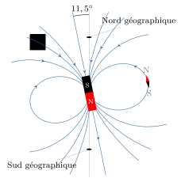
Champ magnétique terrestre.
En réalité, l’axe nord-sud magnétique n’est pas confondu avec l’axe Sud-Nord géographique.
Il est incliné de 11,5° et subit quelques fluctuations journalières. Ce fait reste encore
énigmatique pour les théoriciens. Il est des astres où la configuration est encore plus
exotique : par exemple, sur Neptune l’axe fait 90° avec l’axe de rotation !
L’étude de l’évolution du magnétisme terrestre (paléomagnétisme) soulève encore quelques
énigmes. Par exemple l’inversion du champ magnétique terrestre ne se produit pas
régulièrement (la dernière remonte à 800 000 ans) alors que le champ
magnétique solaire s’inverse lui à une cadence régulière ; tous les 11 ans.
Le magnétisme des aimants
C’est Ampère qui, le premier, pressentit que le magnétisme des aimants tenait son origine
dans l’existence de minuscules boucles de courants au sein des molécules de la matière. Il a
fallut attendre les découvertes du XXe siècle sur
l’atome pour confirmer l’intuition d’Ampère. En effet, de nos jours, on sait que certains
atomes (ou molécules) possèdent un moment dipolaire magnétique du fait de leur structure
électronique. Dans un matériau non aimanté, les moments dipolaires sont orientés de façon
aléatoires de sorte que les effets s’annihilent. C’est la situation que l’on rencontre quand
le matériau est non aimanté ou trop chaud, l’agitation thermique étant alors responsable de
ce désordre. En revanche, dans un aimant, les moments microscopiques tendent à s’aligner
grâce à une interaction d’origine quantique (on parle de couplage ferromagnétique) et parce
que l’agitation thermique n’est pas trop importante. Dans ce cas, l’aimant présente un
moment magnétique macroscopique suffisamment important pour créer un fort champ magnétique.
Bien entendu, lorsqu’on chauffe l’aimant au delà d’une certaine température (dite
température critique), l’ordre ferromagnétique est rompu et l’aimant perd son aimantation.
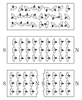
Origine du magnétisme dans les aimants. Expérience de l’aimant
brisé.
Cette description permet de comprendre une expérience qui remonte au
XIIIe siècle : l’expérience de l’aimant brisée.
Si l’on coupe un aimant en deux, on se retrouve avec deux nouveaux aimants possédant chacun
un pôle nord et un pôle sud. Autrement dit, il est impossible d’isoler un seul pôle
magnétique.